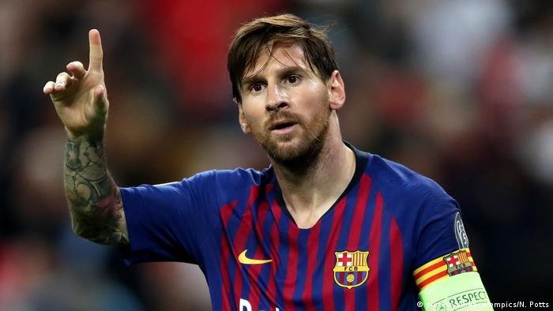

Historia
El Fútbol Club Barcelona es una entidad polideportiva con sede en Barcelona, España. Fue fundado como club de fútbol el 29 de noviembre de 1899 y registrado oficialmente el 5 de enero de 1903
Ver Más

Jugador más conocido del equipo
Lionel Andrés Messi, más conocido como Leo Messi, es un futbolista argentino que también posee la nacionalidad española desde el año 2005. Juega como delantero en el FC Barcelona de la Primera División de España y en la Selección de fútbol de Argentina, de la cual es también capitán
Leer Más